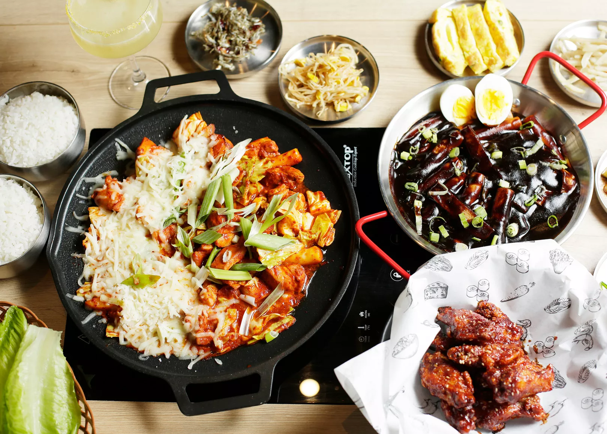

Core Skills
- HTML, JavaScript, Java
- Data Analysis (Stata, Python, SQL)
- Leadership & Team Management
- Project Management & Consulting
Career Summary
| Role |
Organization |
Dates |
Highlights |
| President |
Vietnamese Student Association |
May 2024 – Present |
Led two signature events with 750 attendees; organized weekly meetings to strengthen the Vietnamese community on campus. |
| Administrative Assistant |
Gonzaga University |
Oct 2023 – Present |
Audited event attendees; created Sitecore/iModules templates; designed event visuals; improved communication and visibility. |
| Orientation Leader |
Gonzaga University |
Jan 2023 – Present |
Trained student ambassadors; facilitated orientation for 65 international students; organized scavenger hunts; created ambassador handbook. |
| Project Manager Intern |
New Venture Lab | Cochinito Taqueria |
Spring 2025 |
Promoted second Cochinito Taqueria location in Hayden, ID as project manager. |
| Business Consultant Intern |
New Venture Lab |
Fall 2023 – Spring 2024 |
Consulted Spokane businesses (My Sushi Sensei, Promise Soap, etc.); ran Facebook ad campaigns reaching 1.3M impressions; conducted market analyses. |
Education & Qualifications
Education
Degree Programs
| Program |
Major/Minor |
Institution |
GPA |
Expected Graduation |
| Bachelor of Arts |
Economics & Computer Science / Leadership Studies |
Gonzaga University |
3.82 |
May 2026 |
Relevant Courses
| Course Code |
Title |
Credits |
Grade |
| ECON 202 | Macroeconomics | 3.0 | A- |
| ECON 355 | Regression Analysis | 3.0 | A |
| ECON 322 | Work, Wages, and Inequality | 3.0 | A |
| CPSC 121 | Computer Science I | 3.0 | A- |
| CPSC 224 | Software Development | 3.0 | B |
| CPSC 331 | UI/UX Design | 3.0 | A- |
Research & Projects
| Title |
Institution / Course |
Year |
Details |
| AI vs. Cyber Threats: Measuring Insights, Accuracy, and Actionability in CVE Analysis |
Research – Gonzaga University | Advisor: Dr. Jay Yang |
2025 |
- Evaluated LLM performance on CVEs, comparing GPT-4.1-mini variants and ProveRAG2.
- Found source selection critically affects accuracy; ProveRAG2 yielded more consistent results.
|
| Battleship Project |
CPSC 224 – Software Development |
2025 |
- Designed GUI for two-player and AI modes.
- Implemented gameplay logic using JavaScript; emphasized usability and smooth UX.
|
Interests & Hobbies
Because I'm a creature of boredom, I like to keep myself busy with:
-
Hiking: I'm actually going this weekend and planning to visit Mt. Rainier soon.
 Plan a Mt. Rainier Trip
Plan a Mt. Rainier Trip
- Shopping: If I have nothing to do, I'll take a walk downtown to the mall.
- Playing guitar: Music is a big part of my family so I've been doing this since young.
- Playing games: I can spend hours on this, but it can get really addicting.
-
Cafe & restaurant hopping: My favorite place currently is Gangnam Style.

Visit Gangnam Style